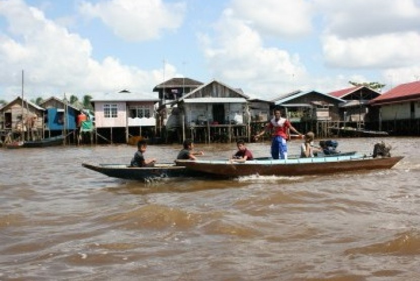

Wagub Kaltim Promosikan Destinasi Wisata Menarik di Samarinda

Wakil Gubernur Provinsi Kalimantan Timur Hadi Mulyadi mempromosikan destinasi wisata Kota Samarinda ke seluruh peserta Seminar Nasional Education is The Most Powerful Tool to Change Civilization, yang telah dilaksanakan oleh Share Education Indonesia, di Samarinda.
Di hadapan peserta dari 10 provinsi di Tanah Air saat berada di atas kapal Pesut Kita, Wagub Hadi menyebutkan wisata susur Sungai Mahakam untuk melihat obyek-obyek wisata seperti jembatan, masjid tua Shiratal Mustaqiem, Masjid Baitul Muttaqin Islamic Center, serta obyek wisata lainnya.
Hadi mengatakan di Samarinda, ibu kota Provinsi Kaltim, terdapat empat jembatan yang membelah Sungai Mahakam, yaitu Jembatan Mahkota II yakni jembatan yang menghubungkan Sungai Kapih, Kecamatan Sambutan dengan Kelurahan Simpang Pasir Kecamatan Palaran."Jembatan ini memiliki panjang sekitar 1.428 meter menjadi jembatan terpanjang di Kaltim. Mulai dibangun tahun 2002 dan dibuka pada 2017," jelas Hadi dalam keterangan resmi diterima di Samarinda, Ahad (6/2).
Selain destinasi susur Sungai Mahakam, Hadi Mulyadi juga promosikan obyek-obyek wisata menarik lainnya di Samarinda dan Kaltim, yang memiliki banyak tempat-tempat wisata bernuansa kebudayaan, alam, pantai, sejarah, religi maupun kuliner yang tak kalah dengan obyek wisata lainnya di Tanah Air.